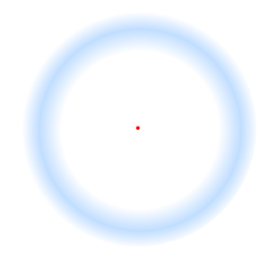
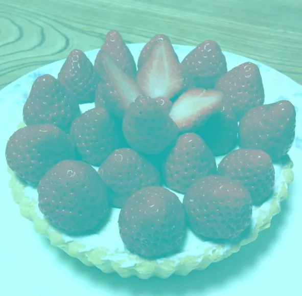
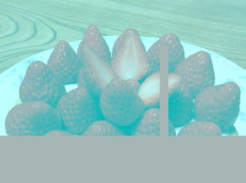
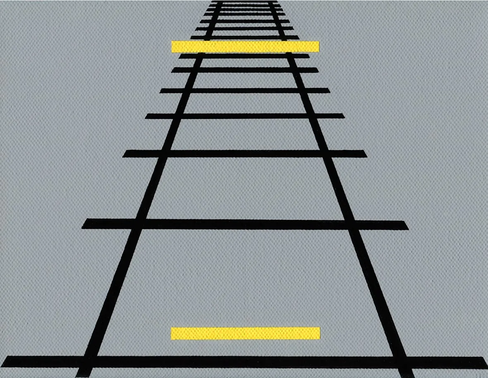

Bienvenido. En esta página encontrarás tres pruebas breves. No avances por tu cuenta.
Espera la indicación de Andrew y resuelve cada experimento en orden.
Fíjate en el punto
Mira fijamente el punto rojo del centro durante 20 a 30 segundos. No persigas el aro azul. Solo mantén tu atención quieta.

Si lo haces bien, notarás que el contorno azul empieza a perder fuerza, desvanecerse y finalmente desaparecerá. No quites la mirada hasta que no logres hacerlo desaparecer por completo.
Mira con atención estas deliciosas fresas...
¿De qué color son?
¿Y cuántas son de ese color?

Observa la imagen completa antes de sacar una conclusión.
Tu primera respuesta es la que cuenta.
En realidad las fresas son todas de color gris.
No hay un solo píxel rojo. Tu mente reconstruye el color para que la escena tenga sentido.
Si no lo crees, haz el experimento de tapar las fresas con los dedos. Enseguida notarás que su verdadero color efectivamente es gris y que no hay una sola fresa roja.

¿Cuál línea es más larga? Contesta en 3-5 segundos.
Mira las dos líneas amarillas y contesta rápidamente cuál es la más larga. Si te demoras más de 4 segundos en contestar es prueba fallida y no cuenta como aprobada.

El contexto de profundidad engaña a tu sistema visual: no solo ve líneas, también interpreta distancia y perspectiva, por esto, aunque la línea de arriba se vea más larga, ambas tienen el mismo largo.
Ya demostramos algo importante:
no puedes confiar ciegamente en tus ojos.
A veces la mente borra información.
A veces la corrige.
Y a veces la interpreta de una manera tan convincente…
que terminas llamando “realidad” a una reconstrucción.